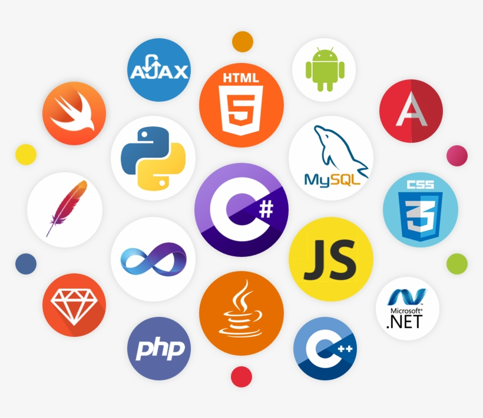

Compiled languages
A compiler translates source code into another form, often machine code, before the program runs. C and C++ are common examples. The build process can also identify certain errors before execution.
HW 1: HTML and CSS
The tools developers use to give computers instructions and build software.
A programming language lets a developer describe the steps a computer should perform. Developers write instructions using rules called syntax. A compiler or interpreter then helps translate or execute those instructions so the computer can perform the task.
Different languages are designed for different needs. Some are common in web development, while others are often used for data analysis, mobile applications, games, or operating-system software.

A compiler translates source code into another form, often machine code, before the program runs. C and C++ are common examples. The build process can also identify certain errors before execution.
An interpreter executes program instructions at runtime. Python and JavaScript are commonly used this way, although modern language environments may also use just-in-time compilation.
| Language | Common uses |
|---|---|
| Python | Automation, data analysis, artificial intelligence, and web services. |
| Java | Enterprise software, backend systems, and Android development. |
| JavaScript | Interactive websites and server-side applications. |
| C | Embedded devices, operating systems, and performance-focused software. |
Languages make different trade-offs involving speed, readability, safety, portability, and the type of work being done. A developer chooses a language based on the project's needs and the tools available.